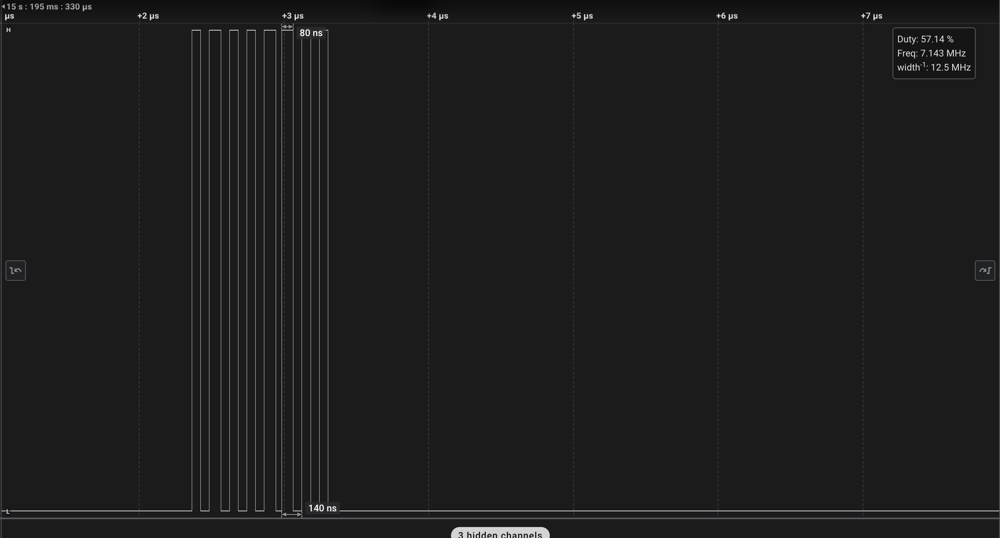
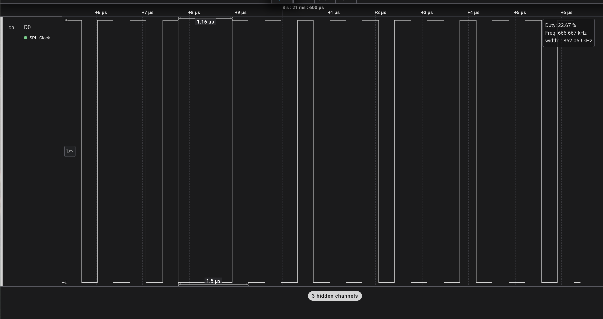
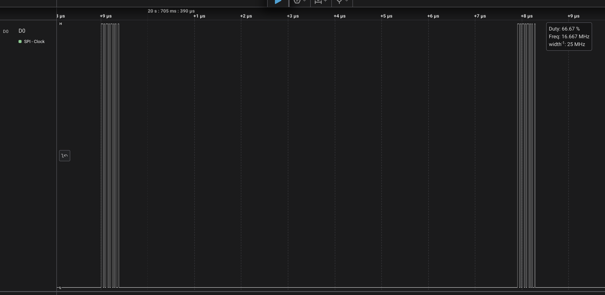
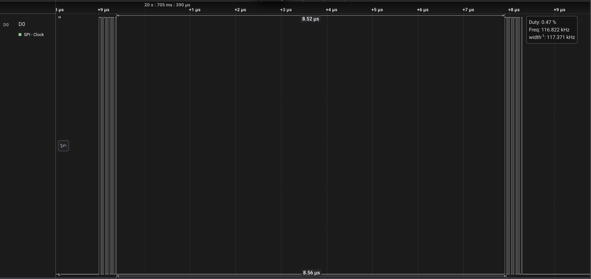

The LCD must accurately render graphics and display the current state of the iPod, including menus, playback status, and user interactions.
Validation: Verify display clarity, responsiveness, and update rate during different operations. To quantify this, we would like to see the signals sent from the LCD display being received at the correct speeds correspond to appropiate MCU clock speeds and any scaling we use.
Final analysis: We were able to achieve this software requirement specification as we were able to allow our SPI to communicate with the LCD screen and render images with 20kb resolution. Its functionality was tested by
testing our SPI communication speed against that of our expectations. We scaled the SPI speed from the clock speed of 160 Mhz by 256 and tested our communication protocol to verify whether or not it was transmitting at the
speeds we expected it to be. The Salae analyzer was used to complete this task where we were able to collect both the sampling rate and the overhead that our device faced in the collection process.
Pictures of our test are shown below:


As can be seen, our sampling rate was around 666.67KHz, which is along the lines of our expectation of what the sampling frequency should be at.
The SD card module must support reading and writing data efficiently, ensuring reliable storage of music, recorded audio, and system logs.
Validation: Conduct read/write speed tests, check file integrity, and test compatibility with different SD card sizes. We want to ensure that our SD card is reading and writing at at least 100kHz to ensure that there is enough buffer time for music to be loaded onto the device.
Final analysis: We were able to achieve this software requirement. We wanted to ensure that we were reading and writing above 100kHz since our initial expectation was that we would be playing music sampled at 88kHz. Eventually, we decided to play music sampled at 32kHz, but we wanted to ensure that we could hit
our initial target sampling rate. Again, we relied on the salae analyzer to conduct these measurements where we measured the read / write speed of the SD card using the salae analyzer by listening on the MISO connection line.


Looking at the bottom-most image, we can see that the sampling rate is at 116.882kHz, which is above our required read/write speed for receiving data from the SD card so we have sufficiently hit this software requirement.
The speaker must play sound accurately and at a sufficient volume without distortion when provided with an audio signal. Our goal is to hit 20db of sound from the speaker.
Validation: Measure frequency response, output power, and signal clarity under different playback conditions. We want to measure the frequency of the audio coming from the speaker and ensure that it is with our expectation of the notes that we are playing / the sampled beats per second that we are expecting.
Final analysis: We measured the sound coming from the speaker using a phone sound measuring app and found that the sound being emitted from the device was measured at 30 db if a meter away.
The microcontrollers must communicate seamlessly with each other and with peripherals such as the LCD, microphone, SD card, and speaker.
Validation: Perform communication protocol tests (e.g., I2C, SPI, UART), measure data transfer latency, and ensure stability under various loads. We will want to test this by ensuring that the communication reates with our devices are correct and are as expected.
Final analysis: This software requirement was largely fulfilled by piecing together our subsystems into a final project. However, we were unable to configure our IMU to work along our other devices. We are unsure exactly why, but our guess is that there is some aspect of our overall system that blocks I2C from running because of
limited clock speed and compute.
The system shall provide an intuitive and responsive user interface for navigation and control.
Validation: Test button responsiveness, menu transitions, and overall usability during different operations. This will be tested by interacting with the device and ensuring that all of the required capabilities mentioned above are integrated into one device without new code configurations.
Final analysis: We're happy to report that this software requirement is mostly fulfilled. We were able to design a user interface that allowed a user to enter our playlist screen, choose between songs to play, and then move from song to song when music began playing.
We were unable to fully fulfill this software requirement because we had issues with adding the pausing functionality to our program. There was some issue with I2S being unable to pause transmitting without crashing our system. We are unsure of the reason for this, but we were unable
to determine an adequate solution by demo day.
The LCD display must have a minimum resolution of 128 x 160 pixels and support clear, legible display of menus, playback status, and user interactions.
Validation: Verify display clarity, resolution, and update rate during different operations. We will test this by ensuring that the communication rate between the device and the LCD are correct and by seeing if we are able to render downsampled images onto our device at 20k bytes.
Final analysis: Yes, we were able to achieve this hardware requirement as intended. The complete 128 x 160 resolution of the ST7735 was able to be used to display our images as we realized we could store the bits of memory of the images on flash instead of on the stack.
A validation can quickly be performed by looking at our display and verifying that the background image fits the totality of the screen.
The SD card module must support reading and writing at fast speeds to efficiently handle large files such as audio and system logs.
Validation: Conduct read/write speed tests, check file integrity, and test compatibility with different SD card sizes We will want to validate this by testing the read / write speed from SD card device to ensure that it is above 100kHz.
Final analysis: This hardware requirement was included even though is it roughly the same as software requirement 2. We were able to fit and read from a 8GB Sandisk SD card so this requirement was met as needed.
The speaker must provide clear and undistorted audio output, with sufficient volume for playback in typical environments. We would like to have 20db of sound for people within a reasonable range (1m away).
Validation: Measure frequency response, output power, and signal clarity under different playback conditions. We will test this by measuring the noise levels produced by our speaker since we will need an amplifier to work with this device. We would like to hit around 30db for the device to be functioning as intended.
Final analysis: We measured the audio levels of the speaker as we moved closer and further away from the speaker. Standing at 1m from the speaker, we measured a constant decibel level of 30db which hit our sound requirements.
A video of our audio recording is provided here: https://drive.google.com/file/d/1t_PpoSGUQ0jUIH2feo2uJvg4bEwMVCDj/view?pli=1
The microcontroller must manage the system’s components, handle user input, audio processing, and communication between peripherals. Obtain IMU readings every 100ms.
Validation: Perform communication protocol tests (e.g., I2C, SPI, UART), measure data transfer latency, and ensure stability under various loads. In order for this to be functioning correctly, we will measure the communication time of the peripherals that we are using and ensure that they are sampling at a rate that will be required from the user.
Final analysis: As we noted before, our communication with the LCD screen, the SD card reader and the speakers worked as intended in our final project. We were, however, unable to integrate the IMU into our working design. We were able to run the device
on its own where our original goal was to read gyroscopic angular momentum measurements every 100ms. We were able to achieve this using the I2C code that we had written for this project. Please look towards the video provided here to see that we’ve hit data transmission speeds of at least 10Hz to our device
https://drive.google.com/file/d/1ABjZcdwRX6afHHr8z1_RlbBKv2L5fbjk/view?usp=sharing
We do however consider this hardware requirement not fully achieved because of the lack of integration into our final device.
The power supply must support efficient power management to ensure optimal device operation and battery longevity.
Validation: Measure power consumption under different workloads and test battery performance over extended usage. To test this, we will need to measure the voltage supply and the current supply using an oscliscope to see if it is 5V. To test if current supply is sufficient, we will both measure the supplied current and use the 5V supply to power our device.
Final analysis: Our goal was to ensure that the batteries we used with our system could power the STM32 and its required operations. To test this, we needed to supply 5V, and handle the current required by the STM32 as it ran the most current draining task of playing music while
reading from the SD card. This amounted to around 0.15A which we were able to find from multimeter measurements of the STM32 current while playing music.


Note that the two image above show that the voltage supplied from the boost converter (we used 3 1.5V battery supply with 1.5A output) is supply 5.12V and is providing 0.15A to our device as it was on and playing music.
Physical buttons or touch interface must allow the user to navigate the system and control media playback and settings.
Validation: Test button responsiveness, UI transitions, and overall usability during different operations. To test this, we will need to ensure that button responses are processed within 500ms to ensure that there is sufficient responsiveness in our device. We will also need to test for adequate button debouncing behavior.
Final analysis: We noted that a big issue with our initial simple button design is that we did not account for button debouncing errors which caused usage of our LCD screen to be difficult. We needed to ensure that our buttons could filter out higher frequency signals, so we wanted to make sure that our revised debouncing design would follow
the capacitor curve for debouncing. This was done because we found it difficult to reproduce any bouncing behavior that we observed.

We also then tested the speed of responsiveness of the system with a larger timescope measurement using the oscliscope. We found that the measured voltage value quickly followed the actual click time as shown in our second oscliscope measurement below. This shows that our button response time is within 500ms, which is further shown in our demo process as well.

Our team learned so much from building this project. We worked with a new microcontroller that we have never previously used so we needed to understand the different registers of the
device as well as its capabilities. Part of that process included initial setup time of understanding the new microcontroller and setting up a new IDE to work with it. It was covered in a later lecture,
but we realized the significance of being able to have abstractions in code that allow for these changes as we realized that our LCD drawing code could be used with the new microcontroller just by modifying the pins
that we were communicating on.
Another important non-technical aspect of this project that we learned was that splitting work is good, but if there is a bottleneck in the project, then the focus of the group should entirely be on that bottleneck.
For us, that was initially being able to read from the SD card device using FATfs. Later, that moved to be being to actually play music from the SD card onto our speakers. When everyone looked at the problem together,
we had different angles that were eventually able to work out a solution.
Our team faced many challenges, but there were also some things that we accomplished that we were very proud of. To note, these were: a working gui with hardware button control, being able to read from an SD card and play music through the speakers, being able to power the device using a 4.5V power supply, and being able to design an enclosure that fit all of our (pretty massive) components inside.
Yes, as we previously mentioned, we initially began the project by divide and conquering the tasks that we had to complete. We later realized that this was entirely inefficient because there were bottlenecks that we needed to fix before we could have a working prototype. We therefore changed our approach going into the last 2 weeks of the project to focus on the areas that were the most important to the project whereby all of our attention was spent on improving these areas.
Yes, as we previously mentioned, we initially began the project by divide and conquering the tasks that we had to complete. We later realized that this was entirely inefficient because there were bottlenecks that we needed to fix before we could have a working prototype. We therefore changed our approach going into the last 2 weeks of the project to focus on the areas that were the most important to the project whereby all of our attention was spent on improving these areas.
Our initial project proposal was overly ambitious. We wanted to build out too many peripherals while working with an entirely new board that we had little to no experience with. If we could restart the project, I would have advised us to stick to something simple that satisfied all of the project requirements, and adding more peripherals on as we got the main components working. We wasted time playing with the microphone, barreljack, and IMU that we weren't able to include in our final project. The same can be said for a lot of our gui that was developed externally before being integrated.
We're really excited about some ideas to make the flow between choosing and playing songs from SD card to device simpler. There's a lot of optimizations that we could make here. First of all, our gui only currently shows 5 songs and titles are not dynamically updating. We can easily make this fix whereby we can load more songs onto the device. Furthermore, we also see the possiblity of building out a web interface where we can scrape songs online (from youtube or other sources) and convert them into a .wav file sampled at 32kHz frequency that is readable by our device. This would make song selection a lot faster and easier.
| ID | Description |
|---|---|
| SRS-01 - LCD Display Functionality | The LCD must accurately render graphics and display the current state of the iPod, including menus, playback status, and user interactions.Validation: Verify display clarity, responsiveness, and update rate during different operations. To quantify this, we would like to see the signals sent from the LCD display being received at the correct speeds correspond to appropiate MCU clock speeds and any scaling we use. |
| SRS-02 SD Card Storage & Read/Write Operations | The SD card module must support reading and writing data efficiently, ensuring reliable storage of music, recorded audio, and system logs.Validation Conduct read/write speed tests, check file integrity, and test compatibility with different SD card sizes. We want to ensure that our SD card is reading and writing at at least 100kHz to ensure that there is enough buffer time for music to be loaded onto the device. |
| SRS-03 Speaker Audio Output | The speaker must play sound accurately and at a sufficient volume without distortion when provided with an audio signal.Validation Measure frequency response, output power, and signal clarity under different playback conditions. We want to measure the frequency of the audio coming from the speaker and ensure that it is with our expectation of the notes that we are playing / the sampled beats per second that we are expecting. |
| SRS-04 Microcontroller (MCU) Interfacing | The microcontrollers must communicate seamlessly with each other and with peripherals such as the LCD, microphone, SD card, and speaker.Validation Perform communication protocol tests (e.g., I2C, SPI, UART), measure data transfer latency, and ensure stability under various loads. We will want to test this by ensuring that the communication reates with our devices are correct and are as expected. |
| SRS-05 User Interface Responsiveness | The system shall provide an intuitive and responsive user interface for navigation and control.Validation Test button responsiveness, menu transitions, and overall usability during different operations. This will be tested by interacting with the device and ensuring that all of the required capabilities mentioned above are integrated into one device without new code configurations. |
| ID | Description |
|---|---|
| HRS-01 - LCD Display | The LCD display must have a minimum resolution of 128 x 160 pixels and support clear, legible display of menus, playback status, and user interactionsValidation: Verify display clarity, resolution, and update rate during different operations. We will test this by ensuringt that the communication rate between the device and the LCD are correct and by seeing if we are able to render downsampled images onto our device at 20k bytes. |
| HRS-02 - SD Card Module | The SD card module must support reading and writing at fast speeds to efficiently handle large files such as audio and system logs.Validation: Conduct read/write speed tests, check file integrity, and test compatibility with different SD card sizes We will want to validate this by testing the read / write speed from SD card device to ensure that it is above 100kHz. |
| HRS-03 - Speaker | The speaker must provide clear and undistorted audio output, with sufficient volume for playback in typical environments. We want this to be at 20db from 1m away. Validation: Measure frequency response, output power, and signal clarity under different playback conditions. We will test this by measuring the noise levels produced by our speaker since we will need an amplifier to work with this device. We would like to hit around 30db for the device to be functioning as intended. |
| HRS-04 - Microcontroller (MCU) | The microcontroller must manage the system’s components, handle user input, audio processing, and communication between peripherals.Validation: Perform communication protocol tests (e.g., I2C, SPI, UART), measure data transfer latency, and ensure stability under various loads. In order for this to be functioning correctly, we will measure the communication time of the peripherals that we are using and ensure that they are sampling at a rate that will be required from the user. |
| HRS-05 - Power Supply | The power supply must support efficient power management to ensure optimal device operation and battery longevity.Validation: Measure power consumption under different workloads and test battery performance over extended usage. To test this, we will need to measure the voltage supply and the current supply using an oscliscope to see if it is 5V. To test if current supply is sufficient, we will both measure the supplied current and use the 5V supply to power our device. |
| HRS-06 - Buttons & User Interface Controls | Physical buttons or touch interface must allow the user to navigate the system and control media playback and settings.Validation: Test button responsiveness, UI transitions, and overall usability during different operations. To test this, we will need to ensure that button responses are processed within 500ms to ensure that there is sufficient responsiveness in our device. |
What major components do you need and why? Try to be as specific as possible. Your Hardware & Software Requirements Specifications should inform your component choices.
Some components that we will need are the ATMEGA328PB which we intend to utilize with the IMU since we already know how the two devices interface given our worksheet experience. We want to use the NUCLEO-F446RE as our main process since it is able to process mode data, which will be required when we are storing and playing music data, and since it has more pins that will allow us to interface with all of our components.
Some output components that we are using are our adafruit speaker, which we find to be standard, an audiojack to allow earbud use and an LCD display touch panel. We chose the LCD display with the touch functionality because of both its touch functionality and because of the bigger display and its wider range of colors.
Our choice of the omnidirectional microphone both reflected on the device's small size and the device's ability to internally process the data that it receives with its internal DAC. We realized that an internal DAC within the microphone would save us tremendous time when building out our device. The same internal DAC reasoning was used in our selection of the amplifier used.
Finally, the IMU we chose reflected an IMU that we are already familiar with and we chose larger buttons for a more consumer-oriented feel.
https://docs.google.com/spreadsheets/d/1H9uE5A8rThZXxHaYCtSz2vRuI-nbI0XPYlmzn1kPBnA/edit?gid=2071228825#gid=2071228825
We will demonstrate our project in class. The end product will be small enough to fit on a table. The device may be connected to an external power source to supply power to the system. A quiet setup may be required to hear the audio produced by the device, and to record audio using the microphone.
| Milestone | Functionality Achieved | Distribution of Work |
|---|---|---|
| Sprint #1 | MicroSD Card Reading. LCD turning on with basic graphic functionality. Microphone recording voice. IMU sending understandable data to device. Speaker should be playing some audio that is controllable by both processors. Serial protocols all should be completed as well | Claren - Microphone voice recording, Praise - LCD turning on with basic graphics, Patrick - Speaker playing audio and SD card reading |
| Sprint #2 | Start integration of components. Get audio jack working with amplifier. Start playing music through SD card read through speaker and be able to store recorded audio. Buttons should start controlling board features. LCD screen should display a more understandable graphic. CAD of case should be designed. | Patrick - Design CAD of case. Praise - Playing music through SD card and selection through LCD screen. Claren - Connect audio jack with amplifier and play music through earbuds. |
| MVP Demo | All components connected and fit inside case. Working minimal demo of song selection and music playing through device. | Patrick - Assembling case, soldering needs. Praise - Connect all of the software components together to play audio. Claren - Work on graphics of LCD screen to allow song selection and better experience. |
| Final Demo | Hopefully little to no work left here. Finish any features that were left unfinished from MVP. Program better graphics in the processor for the LCD | Patrick, Praise, Claren - Work on assorted problems to debug at finish ine. |